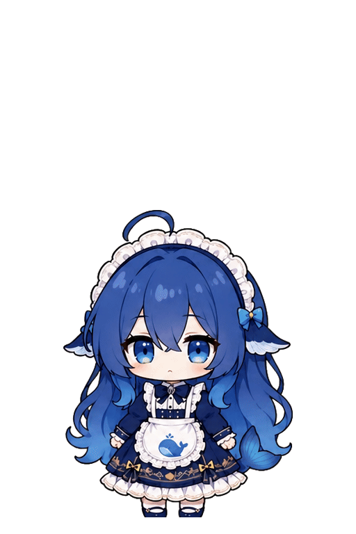
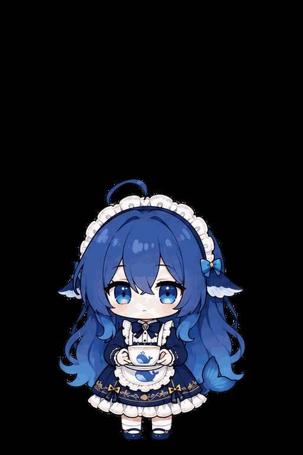
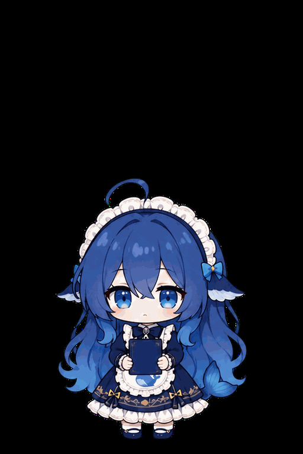
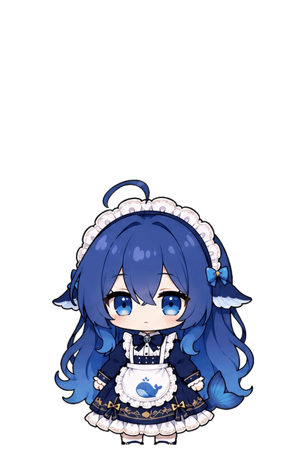
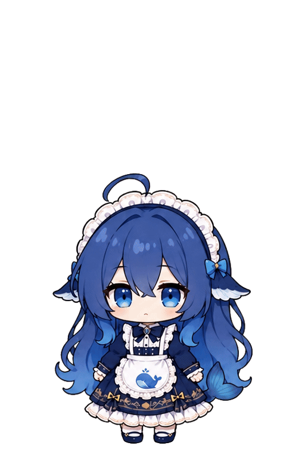

赛博占卜
fun_cyber_fortune掐指计算后展示神秘结果，适合随机提示或每日运势。
这里只展示 manifest 白名单中的 17 套完整帧动作；Live 基础动作不以 GIF 展示。

fun_cyber_fortune掐指计算后展示神秘结果，适合随机提示或每日运势。
fun_deep_think托腮、视线上移并沉思，适合 AI 正在组织答案。
fun_facepalm抬手捂脸并轻叹，适合失败、无语或错误提示。

fun_hot_tea端起热茶、吹气、小口饮用并满足地放下。
fun_hug_whale_plush抱紧鲸鱼玩偶轻蹭，适合安慰和休息。
fun_meal_break拿出食物、进食并满足收尾，适合整点休息提醒。
fun_poet_writer提笔构思并书写，适合创作或长文本生成。
fun_proud_smug叉腰抬头露出得意表情，适合任务成功。

fun_reading_drowse翻看书本后逐渐犯困，适合长时间无操作。
fun_rock_paper_scissors蓄力、出拳并展示结果，可用于小游戏。
fun_selfie_pose举起设备寻找角度并定格自拍姿势。
fun_shy_peek遮住部分脸后从手边偷看，适合害羞回应。
fun_sneeze吸气、打喷嚏、短暂失衡后恢复。

fun_think_overload思考逐渐过载并短暂宕机，适合超时或复杂问题。
fun_tidy_dress低头整理裙摆与衣领后恢复站姿。

fun_travel_planner查看地图、比划路线并做出决定。
land_recover_v4_12接住下落状态，压低缓冲、回弹并稳定恢复到待机。